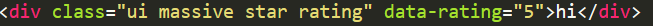
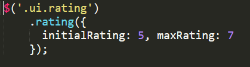

The grid system within Semantic-UI has a default max column of 16.

The most basic form of the grid system would have the class name ui grid.
A row is defined with class name of row and each column is defined within a row
The size of the column can be set as number wide column (ex. four wide column)
It is possible to set the size for all columns with the name ui number column grid (ex. ui three column grid).
Images can be used with Semantic-UI with the ui image class name

You are able to change the size of the image with keywords like medium, small, or large
There are also keywords in the class name that change appearance like rounded, circular or bordered
To make use of modals you require an element to activate the modal

Ratings

Additionally, some Javascript is required to set the amount of stars

Search Bar
To make a simple search bar, you just need to use the ui search class.

This makes use of the list of courses available in the computer science department, as listed
here. These were acquired with the following advanced bash h4ck.